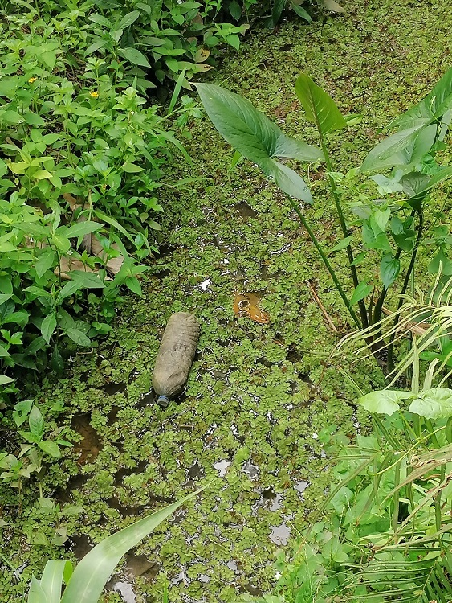
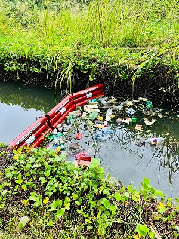
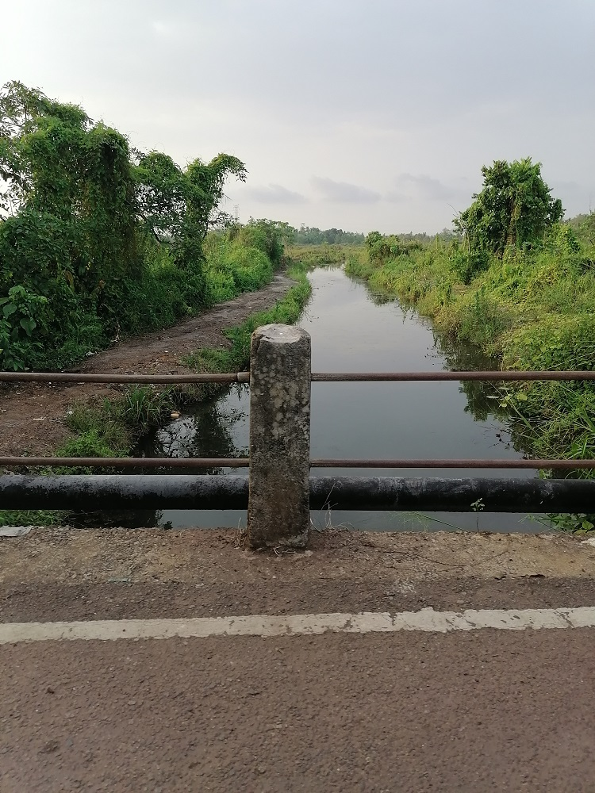

Water Pollution with Plastic

Introduction:
Our area faces a growing problem of water pollution caused by plastic waste. Single-use plastics such as bottles, bags, and packaging often end up in waterways, where they break down into microplastics and pose serious threats to aquatic life and ecosystems.
.jpg)
Solutions to Reduce:
Reducing plastic consumption and promoting alternatives to single-use plastics are essential steps in addressing water pollution with plastic.
Encouraging individuals to adopt reusable bags, bottles, and containers, as well as supporting businesses that offer plastic-free alternatives, can help minimize plastic waste generation.
Implementing plastic waste management strategies such as recycling programs, plastic collection drives, and clean-up initiatives can prevent plastic litter from entering water bodies.
Installing trash traps and litter booms in rivers and stormwater drains can intercept plastic waste before it reaches the ocean, while promoting the use of biodegradable plastics can reduce the persistence of plastic pollution in the environment.

Benefits:
Combating water pollution with plastic not only protects marine and freshwater ecosystems but also safeguards public health and supports sustainable fisheries and tourism industries.
Removing plastic waste from water bodies improves water quality, enhances aesthetic appeal, and preserves biodiversity, contributing to the overall well-being of the community.
